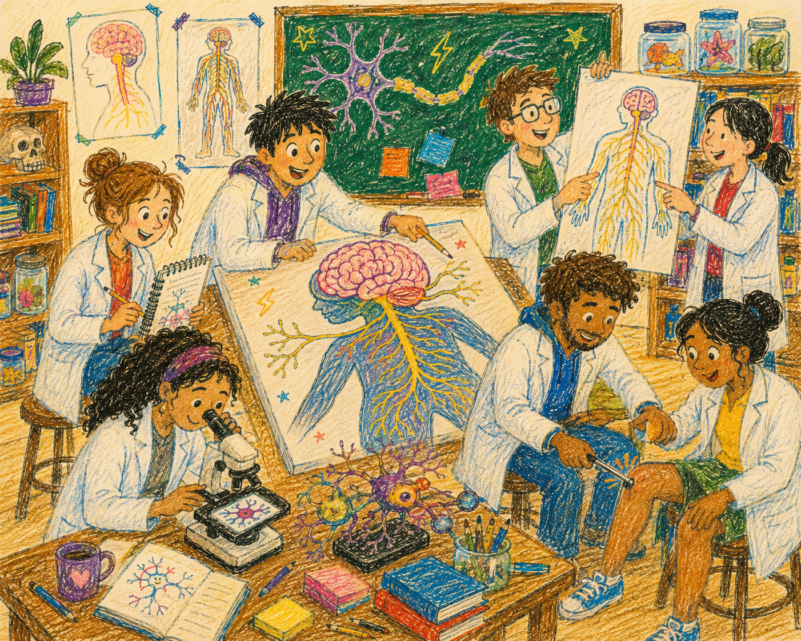
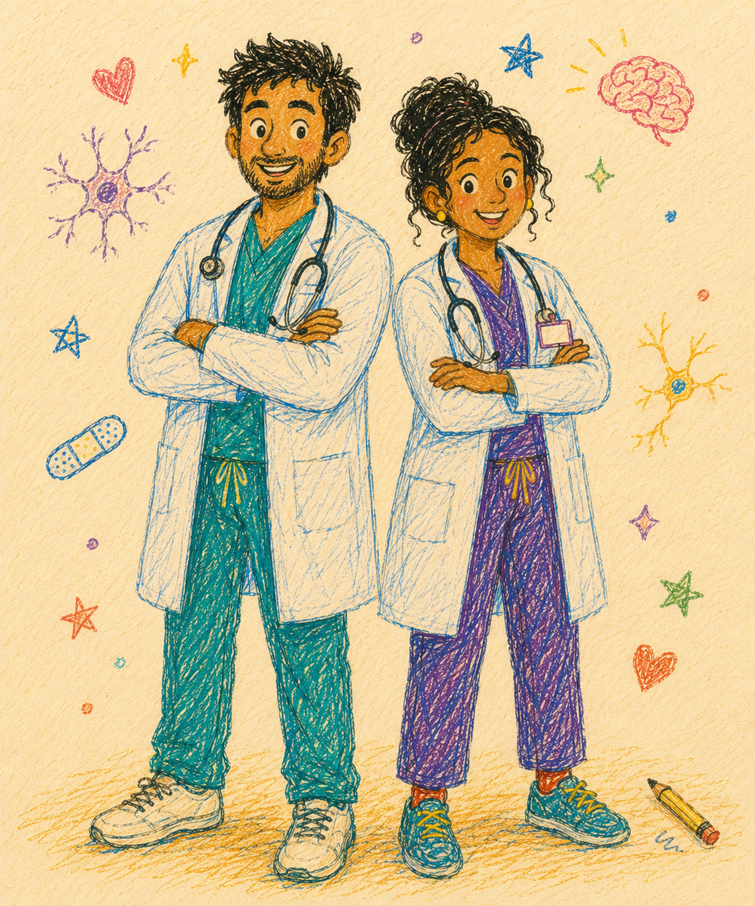

Trace the source
Move from summary to guideline, regulator, original paper or recognised textbook.

“Wait… which nerve was that?” Nobody knows everything.From first lecture to first patient · without losing the person inside the coat
A calmer place to connect foundational medicine, clinical reasoning, global exam pathways and the very strange emotional experience of becoming a doctor.
You are allowed to understand this slowly. Safe medicine is built from careful thinking—not panic disguised as productivity.
The long corridor
Medical programs differ across countries and universities. These stages are learning guides—not claims about one universal curriculum.
The passport desk
Start with purpose—not acronym. Entry tests, university assessments and licensing examinations are not interchangeable.
Requirements and formats change. Always confirm eligibility, dates and official preparation material with the relevant authority and your intended university or regulator.
Before the stethoscope shelf
Search by discipline or learning mode. Every resource doorway is designed to connect core science, clinical relevance, reflection and active recall.
Try a broader topic or clear the filters.
Today’s case lab
The goal is not to name the diagnosis in three seconds. Notice, organise, ask what is missing and choose the safest next step.

The human room
There will be days when the content is fascinating and days when you cannot remember why you started. Neither day tells the whole story.
This will not diagnose or fix you. It will give you one small, humane next step.
The evidence desk
Move from summary to guideline, regulator, original paper or recognised textbook.
Clinical guidance and examination rules change. Current authority matters.
Separate what is known, suspected, context-dependent and still missing.
Evidence supports care. It does not replace listening, consent or individual context.